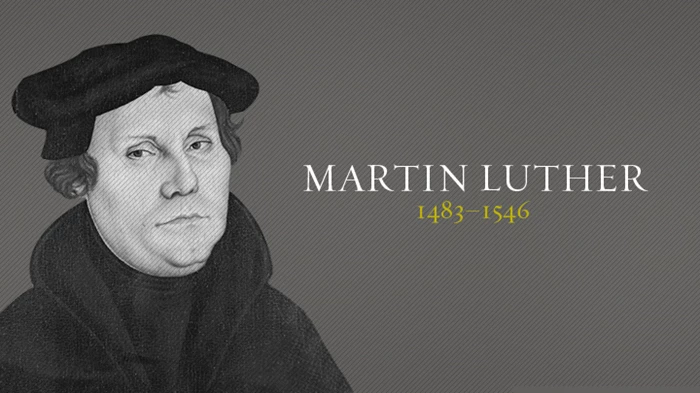

Martin Luther 1483-1546
- 1483: November 10 - Luther is born, his parents were Hans and Margerethe Luther (also called Luder)
- 1484: The family moves to the village of Mansfeld-Lutherstadt.
- 1498: Martin Luther starts school in Eisenach.
- 1501: Luther goes to study law at the University of Erfurt.
- 1505: Caught in a terrible storm in Stotternheim, Luther vows to become a monk if St. Anne saves him. Surviving the storm, he gives up his career as a lawyer and joins the Augustinian order at the monastery in Erfurt.
- 1517: October 31 - Luther nails the 95 Theses to the door of Wittenberg's Castle Church.
- 1518: Luther is charged with heresy in Rome. He has to flee, returning to Wittenberg under the protection of Frederick the Wise
- 1521: Luther is excommunicated and summoned to appear before the Diet of Worms.
- 1523: Katharina von Bora flees to Wittenberg and meets Luther.
- 1525: Luther marries Katharina von Bora
- 1529: Luther publishes The Large Catechism.
- 1546: Luther dies in Eisleben. His coffin is carried to Wittenberg, where he is buried at the Castle Church
"I cannot and will not recant anything, for to go against conscience is neither right nor safe. Here I stand, I can do no other, so help me God. Amen."
- Martin Luther
- Martin Luther
To read a more in depth look at Martin Luther's life check out his Wikipedia Page.